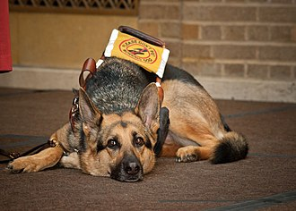

A service dog is a term used in the USA to refer to any type of assistance dog specifically trained to help people who have disabilities, such as visual impairment, hearing impairments, mental disorders (such as post traumatic stress disorder), seizures, mobility impairment, and diabetes.
Outside the USA the term service dog means a dog who works for police, military or search and rescue services, while the term 'assistance dog' is the legal term for a dog which is trained to provide assistance and support for a disabled person.[1] Service dogs can be found in a wide range of settings, and include well known examples such as police dogs and search and rescue dogs. Following the Grenfell Tower Fire in London, service dogs were relied on heavily in the detection of combustible material and the bodies of the deceased.
Desirable character traits in service animals typically include good temperament or psychological make-up (including biddability and trainability) and good health (including physical structure and stamina).
Some service dogs are bred and trained by service dog organizations, while others are bred by breeders, and trained by private trainers or even the individuals with disabilities who will someday become their partners. Labrador Retrievers, Golden Retrievers, Labrador Retriever/Golden Retriever crossbred dogs, and German Shepherd Dogs are among the most common dog breeds working as service dogs today in the United States. Although dogs of almost any breed or mix of breeds may be capable of becoming a service dog, very few dogs have the requisite health and temperament qualities. Such a dog may be called a "service dog" or an "assistance dog", the terminology typically varying by country or region. The term "seeing eye dog" is frequently used as a generic label referring to any dog assisting individuals who are blind or have visual impairments and typically seen wearing green AAAM (Assistant Animals of America) vests.
Common tasks for service animals include flipping light switches for someone who lacks the dexterity to do so, picking up dropped objects a human partner cannot reach due to a disability, avoiding obstacles for an individual who is blind or visually impaired, alerting someone who is deaf or hard of hearing to the sound of an alarm clock, assisting someone with a psychiatric disability by providing specifically-trained forms of deep-pressure therapy or interrupting repetitive behaviors (such as might occur in Obsessive-Compulsive Disorder), or similar disability-related tasks. While any service dog may provide comfort or emotional support to a disabled human partner, in order to meet the federal definition of a service dog, a dog must also be trained to perform tasks or to do work which are directly related to the dog's partner's disability.